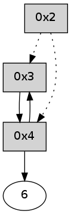

>> << IDX [start] -100 -25 -5 +0 +5 +25 +100 [305.256709099]
 Previous packets
----------------------------------------------------------------------
300.335631 beacon01(adaf) #0 coord=01,02,05,03,04,06 cycle=432.0ms assoc
-- color-indic=0 64 29 42
300.345592 beacon02(adaf) #0 coord=01,02,05,03,04,06 cycle=432.0ms assoc 64 78 bd
300.355592 beacon05(adaf) #0 coord=01,02,05,03,04,06 cycle=432.0ms assoc 64 de 97
300.365593 beacon03(adaf) #0 coord=01,02,05,03,04,06 cycle=432.0ms assoc 64 42 b3
300.375592 beacon04(adaf) #0 coord=01,02,05,03,04,06 cycle=432.0ms assoc 64 e4 99
300.385593 beacon06(adaf) #0 coord=01,02,05,03,04,06 cycle=432.0ms assoc 64 90 85
300.397235 [Hello(4): seq=96 sym=3,6 sysInfo= stat=3:12,0,0,0/6:1,0,0,0]
----------------------------------------------------------------------
300.827739 beacon01(adaf) #0 coord=01,02,05,03,04,06 cycle=432.0ms assoc
-- color-indic=0 64 ed 2d
300.837700 beacon02(adaf) #0 coord=01,02,05,03,04,06 cycle=432.0ms assoc 64 bc d2
300.847700 beacon05(adaf) #0 coord=01,02,05,03,04,06 cycle=432.0ms assoc 64 1a f8
300.857701 beacon03(adaf) #0 coord=01,02,05,03,04,06 cycle=432.0ms assoc 64 86 dc
300.867700 beacon04(adaf) #0 coord=01,02,05,03,04,06 cycle=432.0ms assoc 64 20 f6
300.877702 beacon06(adaf) #0 coord=01,02,05,03,04,06 cycle=432.0ms assoc 64 54 ea
300.889364 [Hello(2): seq=595 asym=3,4 sysInfo= stat=3:1,0,0,0/4:15,0,0,0]
----------------------------------------------------------------------
301.319846 beacon01(adaf) #0 coord=01,02,05,03,04,06 cycle=432.0ms assoc
-- color-indic=0 64 63 38
301.329808 beacon02(adaf) #0 coord=01,02,05,03,04,06 cycle=432.0ms assoc 64 32 c7
301.339807 beacon05(adaf) #0 coord=01,02,05,03,04,06 cycle=432.0ms assoc 64 94 ed
301.349808 beacon03(adaf) #0 coord=01,02,05,03,04,06 cycle=432.0ms assoc 64 08 c9
301.359808 beacon04(adaf) #0 coord=01,02,05,03,04,06 cycle=432.0ms assoc 64 ae e3
301.369808 beacon06(adaf) #0 coord=01,02,05,03,04,06 cycle=432.0ms assoc 64 da ff
301.381470 [Hello(4): seq=97 sym=3,6 sysInfo= stat=3:12,0,0,0/6:2,0,0,0]
----------------------------------------------------------------------
301.811954 beacon01(adaf) #0 coord=01,02,05,03,04,06 cycle=432.0ms assoc
-- color-indic=0 64 a7 57
301.821916 beacon02(adaf) #0 coord=01,02,05,03,04,06 cycle=432.0ms assoc 64 f6 a8
301.831915 beacon05(adaf) #0 coord=01,02,05,03,04,06 cycle=432.0ms assoc 64 50 82
301.841915 beacon03(adaf) #0 coord=01,02,05,03,04,06 cycle=432.0ms assoc 64 cc a6
301.851916 beacon04(adaf) #0 coord=01,02,05,03,04,06 cycle=432.0ms assoc 64 6a 8c
301.861915 beacon06(adaf) #0 coord=01,02,05,03,04,06 cycle=432.0ms assoc 64 1e 90
301.873587 [Hello(2): seq=596 asym=3,4 sysInfo= stat=3:2,0,0,0/4:15,0,0,0]
----------------------------------------------------------------------
302.304062 beacon01(adaf) #0 coord=01,02,05,03,04,06 cycle=432.0ms assoc
-- color-indic=0 64 eb e7
302.314025 beacon02(adaf) #0 coord=01,02,05,03,04,06 cycle=432.0ms assoc 64 ba 18
302.324023 beacon05(adaf) #0 coord=01,02,05,03,04,06 cycle=432.0ms assoc 64 1c 32
302.334023 beacon03(adaf) #0 coord=01,02,05,03,04,06 cycle=432.0ms assoc 64 80 16
302.344024 beacon04(adaf) #0 coord=01,02,05,03,04,06 cycle=432.0ms assoc 64 26 3c
302.354024 beacon06(adaf) #0 coord=01,02,05,03,04,06 cycle=432.0ms assoc 64 52 20
302.365649 [Hello(4): seq=98 sym=3,6 sysInfo= stat=3:12,0,0,0/6:3,0,0,0]
----------------------------------------------------------------------
302.796170 beacon01(adaf) #0 coord=01,02,05,03,04,06 cycle=432.0ms assoc
-- color-indic=0 64 2f 88
302.806130 beacon02(adaf) #0 coord=01,02,05,03,04,06 cycle=432.0ms assoc 64 7e 77
302.816130 beacon05(adaf) #0 coord=01,02,05,03,04,06 cycle=432.0ms assoc 64 d8 5d
302.826130 beacon03(adaf) #0 coord=01,02,05,03,04,06 cycle=432.0ms assoc 64 44 79
302.836132 beacon04(adaf) #0 coord=01,02,05,03,04,06 cycle=432.0ms assoc 64 e2 53
302.846131 beacon06(adaf) #0 coord=01,02,05,03,04,06 cycle=432.0ms assoc 64 96 4f
302.857784 [Hello(2): seq=597 asym=3,4 sysInfo= stat=3:3,0,0,0/4:15,0,0,0]
----------------------------------------------------------------------
303.288277 beacon01(adaf) #0 coord=01,02,05,03,04,06 cycle=432.0ms assoc
-- color-indic=0 64 62 8f
303.298237 beacon02(adaf) #0 coord=01,02,05,03,04,06 cycle=432.0ms assoc 64 33 70
303.308238 beacon05(adaf) #0 coord=01,02,05,03,04,06 cycle=432.0ms assoc 64 95 5a
303.318238 beacon03(adaf) #0 coord=01,02,05,03,04,06 cycle=432.0ms assoc 64 09 7e
303.328239 beacon04(adaf) #0 coord=01,02,05,03,04,06 cycle=432.0ms assoc 64 af 54
303.338240 beacon06(adaf) #0 coord=01,02,05,03,04,06 cycle=432.0ms assoc 64 db 48
303.349882 [Hello(4): seq=99 sym=3,6 sysInfo= stat=3:12,0,0,0/6:4,0,0,0]
----------------------------------------------------------------------
303.780386 beacon01(adaf) #0 coord=01,02,05,03,04,06 cycle=432.0ms assoc
-- color-indic=0 64 a6 e0
303.790347 beacon02(adaf) #0 coord=01,02,05,03,04,06 cycle=432.0ms assoc 64 f7 1f
303.800347 beacon05(adaf) #0 coord=01,02,05,03,04,06 cycle=432.0ms assoc 64 51 35
303.810347 beacon03(adaf) #0 coord=01,02,05,03,04,06 cycle=432.0ms assoc 64 cd 11
303.820347 beacon04(adaf) #0 coord=01,02,05,03,04,06 cycle=432.0ms assoc 64 6b 3b
303.830348 beacon06(adaf) #0 coord=01,02,05,03,04,06 cycle=432.0ms assoc 64 1f 27
303.842010 [Hello(2): seq=598 asym=3,4 sysInfo= stat=3:4,0,0,0/4:15,0,0,0]
----------------------------------------------------------------------
304.272493 beacon01(adaf) #0 coord=01,02,05,03,04,06 cycle=432.0ms assoc
-- color-indic=0 64 ea 50
304.282454 beacon02(adaf) #0 coord=01,02,05,03,04,06 cycle=432.0ms assoc 64 bb af
304.292454 beacon05(adaf) #0 coord=01,02,05,03,04,06 cycle=432.0ms assoc 64 1d 85
304.302454 beacon03(adaf) #0 coord=01,02,05,03,04,06 cycle=432.0ms assoc 64 81 a1
304.312455 beacon04(adaf) #0 coord=01,02,05,03,04,06 cycle=432.0ms assoc 64 27 8b
304.322454 beacon06(adaf) #0 coord=01,02,05,03,04,06 cycle=432.0ms assoc 64 53 97
304.334101 [Hello(4): seq=100 sym=3,6 sysInfo= stat=3:12,0,0,0/6:5,0,0,0]
----------------------------------------------------------------------
304.764601 beacon01(adaf) #0 coord=01,02,05,03,04,06 cycle=432.0ms assoc
-- color-indic=0 64 2e 3f
304.774561 beacon02(adaf) #0 coord=01,02,05,03,04,06 cycle=432.0ms assoc 64 7f c0
304.784563 beacon05(adaf) #0 coord=01,02,05,03,04,06 cycle=432.0ms assoc 64 d9 ea
304.794562 beacon03(adaf) #0 coord=01,02,05,03,04,06 cycle=432.0ms assoc 64 45 ce
304.804562 beacon04(adaf) #0 coord=01,02,05,03,04,06 cycle=432.0ms assoc 64 e3 e4
304.814563 beacon06(adaf) #0 coord=01,02,05,03,04,06 cycle=432.0ms assoc 64 97 f8
304.826223 [Hello(2): seq=599 asym=3,4 sysInfo= stat=3:5,0,0,0/4:15,0,0,0]